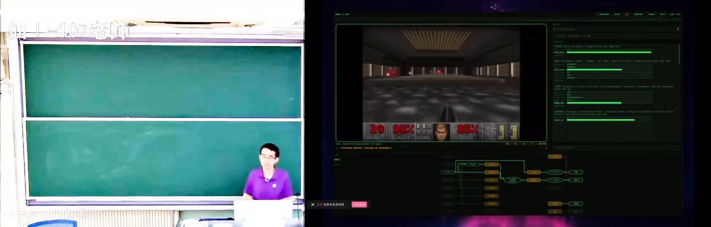
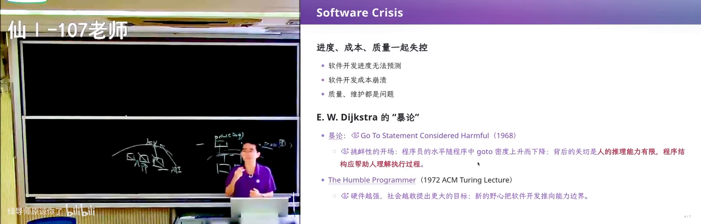
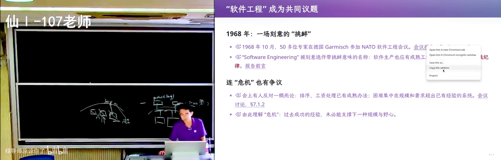
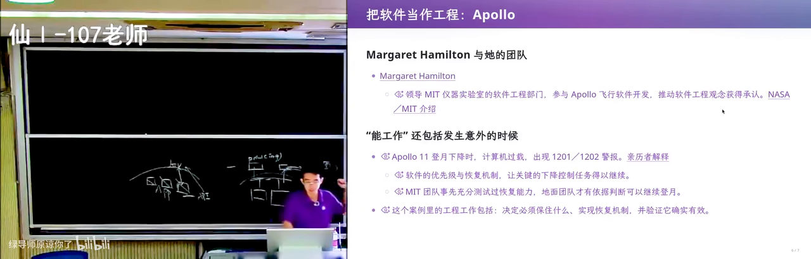
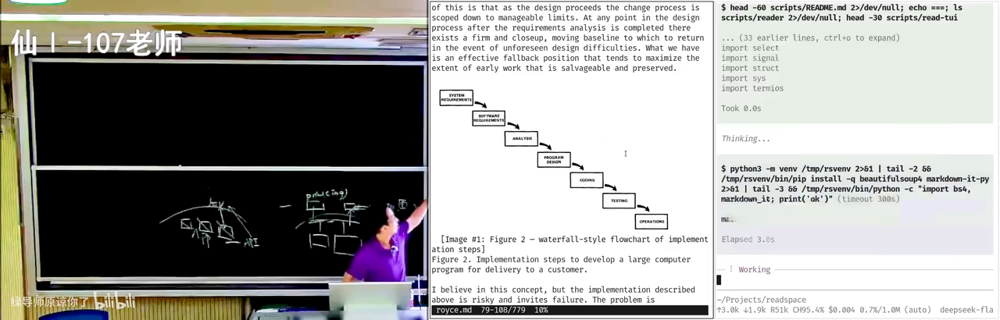
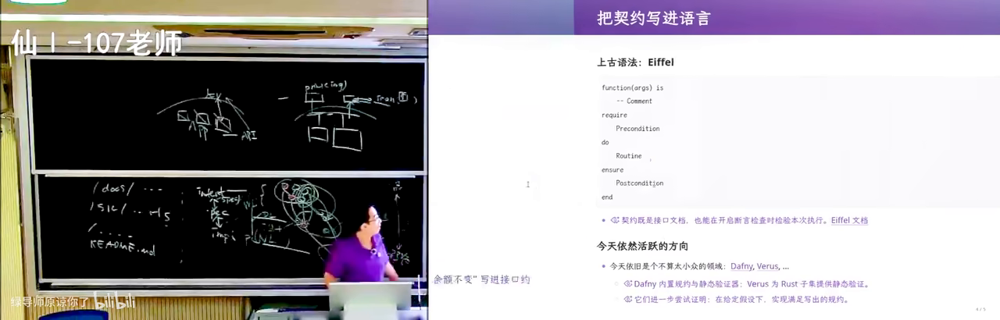

原视频：Bilibili · BV1Nyeq6qEt8（时长约 100 分钟） 课程：南京大学《生成式软件工程》（2026）第 05 讲 · Raw 版 整理说明：本书由视频语音转录后经 AI 重构而成；口语已转为书面语；关键时间点标注 (参考时间)，截图卡片可跳转视频对应位置。
1. 开课：真正进入软件工程
(参考时间: 00:00)
上一讲收在版本管理；本讲正式进入软件工程（Software Engineering，用可重复的方法构造、演进、维护大规模软件的学科与实践）的主干：历史从哪来、危机是什么、留下了什么智慧。
主讲人强调：版本管理也是软件工程的一部分，但今天开始讲「狭义」上的软件工程史与方法。
1.1 课前新闻：模型在逼近「实时智能」
开场先分享近一周新闻：有团队展示了可准实时玩《毁灭战士》（DOOM）类决策的模型——把游戏状态压成 JSON 输入，模型在毫秒到百毫秒级输出一个专用 token 作决策。
- 架构未必是标准 Transformer，可能是更「窄」的专用结构；
- 训练后输出不一定说「人话」，而是领域内的动作编码；
- 信息密度极高时，你会意识到：模型能力上移的速度，正在改写软件能做什么。

开场新闻：准实时玩 DOOM 的模型在 B 站打开 (00:00:40)
对软件工程的含义：当「实现」越来越便宜，怎么把意图说清楚、怎么验证做对了，反而更关键。
2. 回到软件开发：AI 时代仍要讲软件工程
(参考时间: 00:17:37)
主讲人指出：即使 Agent 很强，软件工程智慧仍体现在设计与取舍里——架构还能不能改、接口稳不稳、失败路径怎么兜底。
同样一句需求，不同团队做出的系统可能天差地别；差距往往不在「会不会调 API」，而在：
- 如何分解问题；
- 如何约定接口与状态；
- 如何在硬件、依赖、人为错误都可能出错时仍让系统可用。
曾经的软件工程不是今天这样——是在真金白银的失败里长出来的。
3. 从软件危机到软件工程
(参考时间: 00:39:01)
3.1 早期困境与 goto 之争
早期软件规模上升后，项目超支、延期、难维护成为常态。Dijkstra 等人指出：随意的控制流会让程序人不可读——goto 滥用是典型症状。

经典文献与软件工程概念的诞生在 B 站打开 (00:40:00)
- 「程序员水平随 goto 密度上升而下降」是带讽刺的说法，核心是：结构与可读性比炫技重要；
- 1972 年 Dijkstra 的 The Humble Programmer 等文章，强调在机器变强、系统变复杂时，人必须对结构保持谦逊。
主讲人还提到：在 AI 辅助下读这些老文献，往往比当年更容易理解——因为今天我们天天面对「不确定的复杂系统」。
3.2 NATO 会议与学科诞生
约在 1968 年前后，NATO 资助的软件工程会议正式提出 software engineering 这一名称：
- 意味着软件开发不能再像「手工作坊」，需要工程化的方法、流程与质量意识；
- 与当时航天、国防等超大型软件需求直接相关。

NATO 会议与软件工程概念在 B 站打开 (00:44:10)
3.3 阿波罗 11：工程原则的活教材
登月舱下降过程中曾出现程序警报；经不懈排查与设计上的容错，任务仍成功。主讲人概括出一条第一性原则：
Never going to happen——也要假设它会发生，并在软件里做兜底。
硬件会不可靠，人会误操作，依赖会失败；好的软件系统必须把这些「以为不会发生」的事纳入设计。

阿波罗与软件工程的起点在 B 站打开 (00:47:20)
这与刷 Online Judge 不同：竞赛题往往假设题目是对的；真实软件的「题目」可能本身就有错，需求会变，环境会变。
3.4 开山之作与「被误读」的瀑布模型
软件工程领域有一篇开山级综述，梳理了当时的开发方法。很多教科书从中引出瀑布模型（Waterfall：需求→设计→实现→测试→维护，大致单向阶段推进）。

瀑布模型在教材中的标准图示在 B 站打开 (00:55:10)
主讲人指出关键历史细节：原文其实是在批判瀑布式做法的问题，后来却被简化成「标准教材流程」。这提醒我们：
- 读经典要读原文语境；
- 流程图方便教学，但真实项目很少是纯瀑布；
- 「方法论」与「方法论如何被使用」常常是两回事。
4. 软件工程给世界带来了什么
(参考时间: 01:15:06)
4.1 流程、清单与可交付
软件工程把开发从「个人手艺」变成可组织的交付：
- 阶段与里程碑；
- 评审与测试；
- 文档与规格；
- 团队如何协作、如何验收。
在 AI 还不能「一句话出国民级产品」的时代，这些流程是从数亿美金级教训里蒸馏出来的。
4.2 契约：前置条件与后置条件
设计函数/模块时，可以写清：
- 前置条件（precondition）：调用前必须成立的假设；
- 后置条件（postcondition）：若前置满足，执行后保证什么。
若开发时假设某些异常永远不发生，契约就更重要：它把「假设」写成可检查的形式，而不是散落在聊天记录里。
主讲人提到：今天用 AI 写 MVP 时，契约（spec）甚至可能比手写代码更关键——因为你要在「生成物」与「意图」之间钉住边界。
4.3 形式化与「中间语言」的野心
历史上有人尝试用形式语言（逻辑公式、形式规格）证明系统正确；也有 UML（Unified Modeling Language）等建模语言，试图在需求、设计、代码之间架桥。
- 数学语言一旦公理化对齐，推导是「绝对一致」的；
- 但自然语言与形式语言之间永远有缝隙：说不清的需求、人与人「今天想的和明天不一样」；
- UML 一类中间层在实践中逐渐式微——今天主讲人甚至说「UML 已经死了」，但分层对齐的野心仍在：AI 可以帮你问、帮你查、帮你生成规格草稿。

从规格到实现：契约与建模的尝试在 B 站打开 (01:32:30)
4.4 Never going to happen 的现代版本
把「异常路径」显式化：
- 资源不足、并发冲突、依赖超时、输入非法；
- 断言（assert）与基于性质的测试（property-based testing）在系统无法「编译期百分之百证明」时提供另一层护栏；
- AI 若能证明性质更好；不能证明时，工程上仍要靠测试、监控与兜底。
4.5 AI 时代的资源与公平问题
主讲人用 AI 拆长文档、批量提取「软件工程智慧」做演示，并指出现实问题：
- 模型额度、订阅价格对学生与团队并不平等；
- 「烧 token」做大项目对资源少的人更贵；
- 这不只是技术问题，也是社会性问题。
学习成本的差距会叠加：会用 Agent 与不会用的人，效率差可能很大。
4.6 可对齐与不可对齐
收束时的主题：软件工程一直在处理——
- 哪些可以在语义上钉死（接口、不变量、可测性质）；
- 哪些永远漂浮（模糊需求、人的意图变化、组织沟通）。
工程方法的价值，是把能钉死的部分钉死，让不可对齐的部分可讨论、可迭代、可回退——而不是假装它们不存在。
附录：概念补给
软件工程（Software Engineering）
- 是什么：用系统化方法构造、演进、维护软件的学科与实践。
- 课上为何出现：本讲主线；从危机与历史讲到方法与智慧。
- 和什么像：盖楼要图纸、规范、监理，不能只靠几个能工巧匠。
软件危机（Software Crisis）
- 是什么：软件规模上升后项目失败率高、超支难维护的行业困境。
- 课上为何出现：解释「为什么会有软件工程」。
- 和什么像：手工作坊接不了摩天楼订单。
NATO 软件工程会议
- 是什么：1960 年代末提出 software engineering 名称的标志性会议。
- 课上为何出现：学科「诞生」的节点。
- 和什么像：行业给自己的手艺起名、立规矩。
goto 与结构化编程
- 是什么：限制随意跳转，用顺序/分支/循环等结构写可读程序。
- 课上为何出现：Dijkstra 等人对可维护性的经典批评。
- 和什么像：文章要有段落结构，不能想到哪写到哪。
The Humble Programmer
- 是什么：Dijkstra 1972 年前后关于程序员谦逊与复杂性的著名文章。
- 课上为何出现：机器变强时，人更要对复杂性保持敬畏。
- 和什么像：工具越强，越要清楚自己在驾驭什么。
阿波罗 11 与容错
- 是什么：登月软件在警报下仍完成任务的工程案例。
- 课上为何出现：引出「never going to happen 也要兜底」。
- 和什么像：飞机有多套液压，坏一套还能飞。
瀑布模型（Waterfall）
- 是什么：需求→设计→实现→测试大致阶段推进的过程模型。
- 课上为何出现：教科书常引用；原文却有批判意味。
- 常见误解：真实项目极少是纯瀑布；模型是简化，不是现实本身。
前置条件 / 后置条件（契约）
- 是什么：调用前假设 / 调用后保证。
- 课上为何出现：把「假设永远不发生」写成可检查规格。
- 和什么像：租约写明「谁付水电、损坏谁赔」。
UML
- 是什么：曾流行的统一建模语言，用图表达类、序列、状态等。
- 课上为何出现：中间语言架桥的野心与式微。
- 和什么像：建筑效果图——有帮助，但不等于施工图与验收。
Property-based Testing
- 是什么：用「性质/不变量」自动生成用例做测试，而不是只手写样例。
- 课上为何出现：无法完全形式证明时的工程护栏。
- 和什么像：不只测「这道题答案是 42」，而是测「任何输入输出都非负」。
MVP（本讲语境）
- 是什么：最小可用版本；在契约不清时极易做偏。
- 课上为何出现：AI 写 MVP 时更要先钉 spec。
Token 经济与学习公平
- 是什么：按模型用量计费导致的学习/开发成本差异。
- 课上为何出现：演示 AI 批处理后讨论资源不平等。
- 和什么像：图书馆免费，但实验室机时很贵。
书架 Shelf 流水线生成 · 内容衍生自 B 站公开课程视频 BV1Nyeq6qEt8